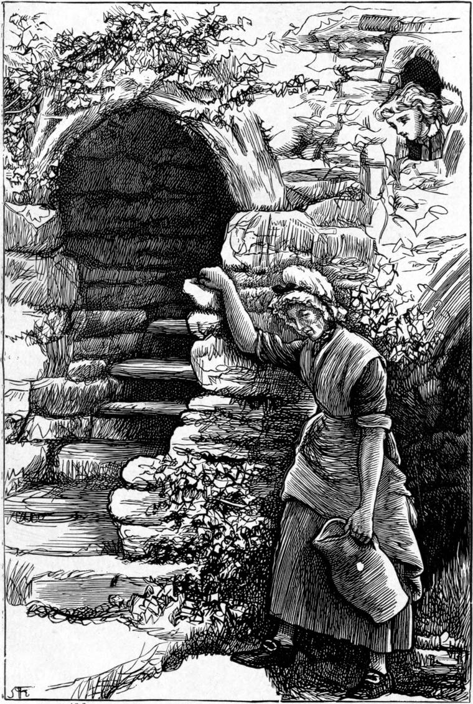

The first thing Willie did, after getting his room all to himself, was to put hinges on the windows and make them open, so satisfying his father as to the airiness of the room. Finding himself then, as it were, in a house of his own, he began to ask his friends in the village to come and see him in his new quarters. The first who did so was Mrs Wilson, and Mr Spelman followed. Hector Macallaster was unwell, and it was a month before he was able to go; but the first day he could he crawled up the hill to the Ruins, and then up the little winding stair to Willie's nest. The boy was delighted to see him, made him sit in his great arm-chair, and, as the poor man was very tired with the exertion, would have run to the house to get him something; but Hector begged for a little water, and declared he could take nothing else. Therefore Willie got a tumbler from his dressing-table, and went to the other side of the room. Hector, hearing a splashing and rushing, turned round to look, and saw him with one hand in a small wooden trough that ran along the wall, and with the other holding the tumbler in a stream of water that fell from the side of the trough into his bath. When the tumbler was full, he removed his hand from the trough, and the water ceased to overflow. He carried the tumbler to Hector, who drank, and said the water was delicious.
Hector could not imagine how the running water had got there, and Willie had to tell him what I am now going to tell my reader. His grandmother's sovereign and his own hydraulics had brought it there.
He had been thinking for some time what a pleasure it would be to have a stream running through his room, and how much labour it would save poor old Tibbie; for it was no light matter for her old limbs to carry all the water for his bath up that steep narrow winding stair to his room. He reasoned that as the well rose and overflowed when its outlet was stopped, it might rise yet farther if it were still confined; for its source was probably in the heart of one of the surrounding hills, and water when confined will always rise as high as its source. Therefore, after much meditation as to how it could be accomplished in the simplest and least expensive manner, he set about it as follows.
First of all he cleared away the floor about the well, and built up the circular wall of it a foot or two higher, with stones picked from those lying about, and with mortar which he made himself. By means of a spirit-level, he laid the top layer of stones quite horizontal; and he introduced into it several blocks of wood instead of stones.
Next he made a small wooden frame, which, by driving spikes between the stones, he fastened to the opening of the underground passage, so that a well-fitting piece of board could move up and down in it, by means of a projecting handle, and be a more manageable sluice than he had hitherto had.
Then he made a strong wooden lid to the mouth of the well, and screwed it down to the wooden blocks he had built in. Through a hole in it, just large enough, came the handle of the sluice.
Next, in the middle of the cover, he made a hole with a brace and centre-bit, and into it drove the end of a strong iron pipe, fitting tight, and long enough to reach almost to the top of the vault. As soon as this was fixed he shut down the sluice, and in a few seconds the water was falling in sheets upon him, and flooding the floor, dashed back from the vault, against which it rushed from the top of the pipe. This was enough for the present; he raised the sluice and let the water escape again below. It was plain, from the force with which the water struck the vault, that it would yet rise much higher.
He scrambled now on the top of the vault, and, examining the ruins, soon saw how a pipe brought up through the breach in the vault could be led to the hole in the wall of his room which he had shown his father as a ventilator. But he would not have a close pipe running through his room. There would be little good in that. He could have made a hole in it, with a stopper, to let the water out when he wanted to use it, but that would be awkward, while all the pleasure lay in seeing the water as it ran. Therefore he got Mr Spelman to find him a long small pine tree, which he first sawed in two, lengthways, and hollowed into two troughs; then, by laying the small end of one into the wide end of the other, he had a spout long enough to reach across the room, and go through the wall on both sides.
The chief difficulty was to pierce the other wall, for the mortar was very hard. The stones, however, just there were not very large, and, with Sandy's help, he managed it.
The large end of one trough was put through the ventilator-hole, and the small end of the other through the hole opposite; their second ends met in the middle, the one lying into the other, and were supported at the juncture by a prop.
They filled up the two openings round the ends with lime and small stones, making them as tidy as they could, and fitting small slides by which Willie could close up the passages for the water when he pleased. Nothing remained but to solder a lead pipe into the top of the iron one, guide this flexible tube across the ups and downs of the ruins, and lay the end of it into the trough.
At length Willie took his stand at the sluice, and told Sandy to scramble up to the end of the lead pipe, and shout when the water began to pour into the trough. His object was to find how far the sluice required to be shut down in order to send up just as much water as the pipe could deliver. More than that would cause a pressure which might strain, and perhaps burst, their apparatus.
He pushed the sluice down a little, and waited a moment.
"Is it coming yet, Sandy?" he cried.
"Not a drop," shouted Sandy.
Willie pushed it a little further, and then knew by the change in the gurgle below that the water was rising in the well; and it soon began to spout from the hole in the cover through which the sluice-handle came up.
"It's coming," cried Sandy, after a pause; "not much, though."
Down went the sluice a little further still.
"It's pouring," echoed the voice of Sandy amongst the ruins; "as much as ever the pipe can give. Its mouth is quite full."
Willie raised the sluice a little.
"How is it now?" he bawled.
"Less," cried Sandy.
So Willie pushed it back to where it had been last, and made a notch in the handle to know the right place again.
So the water from the Prior's Well went careering through Willie's bed-chamber, a story high. When he wanted to fill his bath, he had only to stop the run with his hand, and it poured over the sides into it; so that Tibbie was to be henceforth relieved of a great labour, while Willie's eyes were to be delighted with the vision, and his ears with the sounds of the water scampering through his room.
An hour or so after, as he was finishing off something about the mouth of the well, he heard his father calling him.
"Willie, Willie," he shouted, "is this any more of your kelpie work?"
"What is it, father?" cried Willie, as he came bounding to him.
He needed no reply when he saw a great pool of water about the back door, fed by a small stream from the direction of the woodhouse. Tibbie had come out, and was looking on in dismay.

"That's Willie again, sir," she was saying. "You never can tell where he'll be spouting that weary water at you."
The whole place'll be bog before long, and we'll be all turned into frogs, and have nothing to do but croak. That well 'll be the ruin of us all with cold and coughs."
"You'll be glad enough of it to-night, Tibbie," said Willie, laughing prophetically.
"A likely story!" she returned, quite cross. "It'll be into the house if you don't stop it."
"I'll soon do that," said Willie.
Neither he nor Sandy had thought what would become of the water after it had traversed the chamber. There it was pouring down from the end of the wooden spout, just clearing the tarred roof of the spiral stair, and plashing on the ground close to the foot of it; in their eagerness they had never thought of where it would run to next. And now Willie was puzzled. Nothing was easier than to stop it for the present, which of course he ran at once to do; but where was he to send it?
Thinking over it, however, he remembered that just on the other side of the wall was the stable where his father's horses lived, close to the parson's garden; and in the corner, at the foot of the wall, was a drain; so that all he had to do was to fit another spout to this, at right angles to it, and carry it over the wall.
"You needn't take any water up for me tonight, Tibby," he said, as he went in to supper, for he had already filled his bath.
"Nonsense, Willie," returned Tibbie, still out of temper because of the mess at the door. "Your papa says you must have your bath, and my poor old bones must ache for 't."
"The bath's filled already. If you put in one other pailful, it'll run over when I get into it."
"Now, don't you play tricks with me, Willie. I won't have any more of your joking," returned Tibbie.
Nettled at the way she took the information with which he had hoped to please her, he left her to carry up her pail of water; but it was the last, and she thanked him very kindly the next day.
The only remaining question was how to get rid of the bath-water. But he soon contrived a sink on the top step of the stair outside the door, which was a little higher than the wall of the stable-yard. From there a short pipe was sufficient to carry that water also over into the drain.
I may mention, that although a severe winter followed, the Prior's Well never froze; and that, as they were always either empty, or full of running water, the pipes never froze, and consequently never burst.